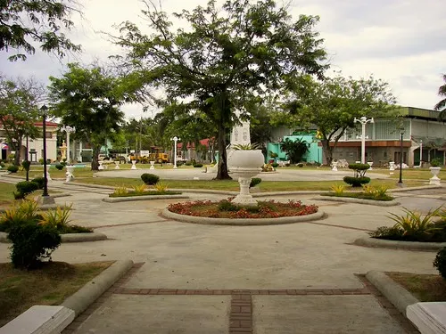

Places to Visit

Simala Shrine (Our Lady of Simala)
One of the Philippines' most visited pilgrimage destinations, the castle-like Simala Shrine in Barangay Simala is dedicated to Our Lady of Simala. Thousands of devotees arrive each year seeking healing and miracles from the miraculous image of the Virgin Mary.

Tañon Strait Coastline
The western coast of Sibonga faces the scenic Tañon Strait, a protected seascape between Cebu and Negros Island. Visitors can enjoy fishing, coastal walks, and breathtaking sunset views over the open water.

Saint Michael the Archangel Parish Church
The centuries-old parish church stands as the spiritual and historical center of Sibonga. Built during the Spanish colonial era, this heritage structure remains an active place of worship and an enduring symbol of Sibonga's faith.

Fishing Communities and Coves
The coastal barangays host traditional fishing communities where visitors can observe traditional bangka boat-building, watch fishermen at work, and sample fresh seafood caught daily from the Tañon Strait.

Sibonga Town Center and Plaza
The town plaza reflects the traditional colonial layout of Philippine municipalities. This social heart of the town comes alive during local fiestas, community events, and lively weekend markets throughout the year.

Upland Farms and Scenic Views
The interior upland barangays of Sibonga offer lush agricultural landscapes, fresh cool air, and sweeping views of the Cebu highlands — a peaceful escape from the coast and a glimpse of traditional rural Filipino life.